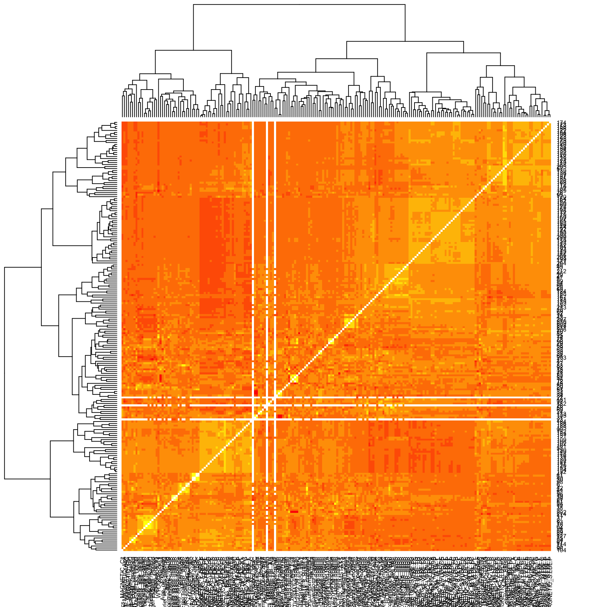

This document aims to recover as much data as possible concerning genetic correlation between traits. It studies different options. Sometimes it just take GC from an external resource, sometimes I compute it myself.
library(tidyverse)1 LDHub
1.1 Get data
The LD Hub website gives the genetic correlations (GC) between the pairs of many diseases. I downloaded the results for 221 traits (without 7 traits from ENIGMA) using data from LD Hub. The website is here and the link I clicked is that one. This has been done the 19/10/2017.
This file has been saved in the dropbox. I can load it
LDHubGC = read.table("0_DATA/LD-Hub_genetic_correlation_221x221_no_ENIGMA.csv.gz", header = TRUE, na.strings = "/", sep=";", dec=",")And reformat it a little bit + Make a long format
# Change col and rownames
colnames(LDHubGC) = colnames(LDHubGC) %>% gsub(".sumstats.gz", "", .) %>% gsub(".txt", "", .) %>% gsub(".gz", "", .) %>% gsub(".tab", "", .) %>% gsub(".sumstats", "", .) %>% gsub(".csv", "", .)
LDHubGC[,1] = LDHubGC[,1] %>% gsub(".sumstats.gz", "", .) %>% gsub(".txt", "", .) %>% gsub(".gz", "", .) %>% gsub(".tab", "", .) %>% gsub(".sumstats", "", .) %>% gsub(".csv", "", .)
#summary(LDHubGC)
# A few values are not understood by R, I put NA instead. ("NA", e10-8...)
# Long format
LDHubGC_long = LDHubGC %>% gather(key="disease2", value="GC" , -1) %>% rename_(disease1 = names(.)[1]) %>% mutate(GC = as.numeric(as.character(GC)))
# Use the first column as a rownames for the wide format
rownames(LDHubGC)=LDHubGC[,1]
LDHubGC=LDHubGC[, -1]
LDHubGC = apply(LDHubGC, 2, function(x){as.numeric(as.character(x))} )
LDHubGC=as.matrix(LDHubGC)1.2 GC distribution
First we can check what is the the distribution of GCs amoung the 45796 available correlations. It looks like we have a normal distribution of GC, centered on O.
Three strange events however:
- A pic of GC=1, bug in the dataset?
- Some GC over 1, is it possible to have such GCs?
- It looks like there are more GC>0 than GC<0
LDHubGC_long %>%
filter( disease1 != disease2) %>%
filter( GC != "NA") %>%
arrange(desc(GC)) %>%
ggplot( aes(x=GC)) +
geom_histogram(bins=300)
1.3 Highest GC
Can we have a look at the 5 biggest GCs for curiosity?
LDHubGC_long %>%
filter( disease1 != disease2) %>%
filter( GC != "NA") %>%
arrange(desc(GC)) %>%
head(15) %>%
ggplot( aes(y=GC, x=paste(disease1, disease2, sep=" - "))) +
geom_bar(stat="identity", fill="skyblue") +
xlab("Pair of diseases") +
coord_flip()
1.4 Heatmap
Heatmap of these GC:
m=LDHubGC
m[upper.tri(m)] <- t(m)[upper.tri(m)]
#m=na.omit(m)
diag(m)=NA
heatmap(m)
What are the disease that could potentially interest me?: -Schizophrenia.sumstats.gz
2 Summary Statistics from UKB
Summary statistics of GWAS on UKB are available for many traits. There are here:
cd /afm01/Q0286/huanwei.wang/reference/UKB_neale/gwas_resultsIt appears that GWAS summary statistics are available for several mental disorders: F10,F20,F23,F25,F30,F31,F32,F33,F41,F43,F45,F52,F60,F99.
With these summary, we should be able to compute genetic correlations.
2.1 Install the LDSC program
# good repo
cd /ibscratch/wrayvisscher/Yan_Holtz/3_UKB_COMO/GENETIC_CORRELATION
# Install ANACONDA to have python and every libraries
# clone LDSC (the python program)
git clone https://github.com/bulik/ldsc.git
# Now I am ready to use this program. A proof:
/clusterdata/apps/anaconda/bin/python ldsc.py -h
# I need 2 files provided by LDSC: I stock them in the
# - eur_w_ld_chr : gives the LDs
# - w_hm3.snplist : list of HapMap3 SNPs with their alleles2.2 2.2 Reformat the files to be readable by LDSC
# First: copy the UKB sumstat = input data
cd /ibscratch/wrayvisscher/Yan_Holtz/3_UKB_COMO/GENETIC_CORRELATION/GWAS_SUMSTAT
cp /afm01/Q0286/huanwei.wang/reference/UKB_neale/gwas_results/F* .
# Then I reformat files. This takes place in the GWAS_SUMMARY directory
cd /ibscratch/wrayvisscher/Yan_Holtz/3_UKB_COMO/GENETIC_CORRELATION/GWAS_SUMSTAT
nano script_reformat
----
for i in /afm01/Q0286/huanwei.wang/reference/UKB_neale/gwas_results/[A-Z][0-9]*gz ; do
a=$(echo $i | sed 's/.*results\///')
zcat $i | tr '\t' ' ' | sed 's/:/ /g' | awk '{ print $5,$3,$4,$9,$12}' | sed 's/ytx.*/SNP A1 A2 Z p/' > /ibscratch/wrayvisscher/Yan_Holtz/3_UKB_COMO/GENETIC_CORRELATION/GWAS_SUMSTAT/${a}.clean
done
---
chmod 777 script_reformat.sh
qsub -b y -cwd -e tmp -o tmp -l vf=1G,h_vmem=1G "/ibscratch/wrayvisscher/Yan_Holtz/3_UKB_COMO/GENETIC_CORRELATION/GWAS_SUMSTAT/script_reformat.sh" 2.3 2.3 Mudge the files.
# ----- On a specific file
i=/ibscratch/wrayvisscher/Yan_Holtz/3_UKB_COMO/GENETIC_CORRELATION/GWAS_SUMSTAT/A04.assoc.tsv.gz.clean
a=$(echo $i | sed 's/.assoc.*//' | sed 's/.*SUMSTAT\///')
/clusterdata/apps/anaconda/bin/python /ibscratch/wrayvisscher/Yan_Holtz/1_SOFT/ldsc/munge_sumstats.py \
--sumstats $i \
--N 10000 \
--out /ibscratch/wrayvisscher/Yan_Holtz/3_UKB_COMO/GENETIC_CORRELATION/GWAS_SUMSTAT/$a \
--merge-alleles /ibscratch/wrayvisscher/Yan_Holtz/3_UKB_COMO/GENETIC_CORRELATION/GWAS_SUMSTAT/w_hm3.snplist
# ------ One every files
nano script_mudge.sh
---
#!/bin/bash
for i in /ibscratch/wrayvisscher/Yan_Holtz/3_UKB_COMO/GENETIC_CORRELATION/GWAS_SUMSTAT/*.clean; do
a=$(echo $i | sed 's/.assoc.*//' | sed 's/.*SUMSTAT\///')
echo $a
/clusterdata/apps/anaconda/bin/python /ibscratch/wrayvisscher/Yan_Holtz/1_SOFT/ldsc/munge_sumstats.py \
--sumstats $i \
--N 10000 \
--out /ibscratch/wrayvisscher/Yan_Holtz/3_UKB_COMO/GENETIC_CORRELATION/GWAS_SUMSTAT/$a \
--merge-alleles /ibscratch/wrayvisscher/Yan_Holtz/3_UKB_COMO/GENETIC_CORRELATION/GWAS_SUMSTAT/w_hm3.snplist
done
---
chmod 777 script_mudge.sh
qsub -b y -cwd -e tmp -o tmp -l vf=30G,h_vmem=30G "/ibscratch/wrayvisscher/Yan_Holtz/3_UKB_COMO/GENETIC_CORRELATION/GWAS_SUMSTAT/script_mudge.sh" 2.4 Compute the genetic correlation
# ----- On a specific file
# We have error for diseases F23-F25-F41-F52-F99. Several possibilities exist: heritability too low OR alleles with too strong effect.
# See https://github.com/bulik/ldsc/issues/54
/clusterdata/apps/anaconda/bin/python /ibscratch/wrayvisscher/Yan_Holtz/1_SOFT/ldsc/ldsc.py \
--rg /ibscratch/wrayvisscher/Yan_Holtz/3_UKB_COMO/GENETIC_CORRELATION/GWAS_SUMSTAT/A04.sumstats.gz,/ibscratch/wrayvisscher/Yan_Holtz/3_UKB_COMO/GENETIC_CORRELATION/GWAS_SUMSTAT/A08.sumstats.gz \
--ref-ld-chr /ibscratch/wrayvisscher/Yan_Holtz/3_UKB_COMO/GENETIC_CORRELATION/GWAS_SUMSTAT/eur_w_ld_chr/ \
--w-ld-chr /ibscratch/wrayvisscher/Yan_Holtz/3_UKB_COMO/GENETIC_CORRELATION/GWAS_SUMSTAT/eur_w_ld_chr/ \
--out /ibscratch/wrayvisscher/Yan_Holtz/3_UKB_COMO/GENETIC_CORRELATION/GWAS_SUMSTAT/tmp_test_cor
# ------ On every files
nano script_GC_computation
--------
all=$(ls /ibscratch/wrayvisscher/Yan_Holtz/3_UKB_COMO/GENETIC_CORRELATION/GWAS_SUMSTAT/*sumstats*)
ntot=$(echo $all | awk '{print NF}')
i=$1
for j in $(seq 1 $ntot); do
if [ "$j" -gt "$i" ]; then
# Get the 2 files that I am going to study
a=$( echo $all | awk -v n=$i '{print $n}' )
b=$( echo $all | awk -v n=$j '{print $n}' )
# Make clean names
namea=$( echo $a | sed 's/.sumstats.gz//' | sed 's/.*GWAS_SUMSTAT\///')
nameb=$( echo $b | sed 's/.sumstats.gz//' | sed 's/.*GWAS_SUMSTAT\///')
echo $namea, $nameb
# run the program
/clusterdata/apps/anaconda/bin/python /ibscratch/wrayvisscher/Yan_Holtz/1_SOFT/ldsc/ldsc.py \
--rg ${a},${b} \
--ref-ld-chr /ibscratch/wrayvisscher/Yan_Holtz/3_UKB_COMO/GENETIC_CORRELATION/GWAS_SUMSTAT/eur_w_ld_chr/ \
--w-ld-chr /ibscratch/wrayvisscher/Yan_Holtz/3_UKB_COMO/GENETIC_CORRELATION/GWAS_SUMSTAT/eur_w_ld_chr/ \
--out /ibscratch/wrayvisscher/Yan_Holtz/3_UKB_COMO/GENETIC_CORRELATION/GWAS_SUMSTAT/Cor_${namea}_${nameb}
fi
done
--------
chmod 777 script_GC_computation
# Test on a number
qsub -b y -cwd -N GC_computation -e test.e -o test.o -l vf=30G,h_vmem=30G "/ibscratch/wrayvisscher/Yan_Holtz/3_UKB_COMO/GENETIC_CORRELATION/GWAS_SUMSTAT/script_GC_computation 640"
# Send it on every number
for i in $(seq 1 600) ; do
qsub -b y -cwd -N GC_computation -e GC.e -o GC.o -l vf=20G,h_vmem=20G "/ibscratch/wrayvisscher/Yan_Holtz/3_UKB_COMO/GENETIC_CORRELATION/GWAS_SUMSTAT/script_GC_computation $i"
done2.5 Summarize in a clean file
For each pair, I need to get the result of LDSC and write them in a clean file.
---
cd /ibscratch/wrayvisscher/Yan_Holtz/3_UKB_COMO/GENETIC_CORRELATION/GENETIC_CORRELATION/
echo "p1 p2 rg se z p h2_obs h2_obs_se h2_int h2_int_se gcov_int gcov_int_se"> /ibscratch/wrayvisscher/Yan_Holtz/3_UKB_COMO/GENETIC_CORRELATION/CORRELATION/Genetic_Correlation_of_UKB_diseases.txt
for i in /ibscratch/wrayvisscher/Yan_Holtz/3_UKB_COMO/GENETIC_CORRELATION/GWAS_SUMSTAT/Cor_* ; do
val=$(cat $i | grep '^/ib.*sumstat' | cut -d" " -f4-)
d1=$( echo $i | sed 's/.*Cor_//' | sed 's/_.*//')
d2=$( echo $i | sed 's/.*Cor.*_//' | sed 's/.log//')
echo $d1 $d2 $val >> /ibscratch/wrayvisscher/Yan_Holtz/3_UKB_COMO/GENETIC_CORRELATION/CORRELATION/Genetic_Correlation_of_UKB_diseases.txt
done
---
nano script_summarize_GC.sh
chmod 777 script_summarize_GC.sh
qsub -b y -cwd -N tmp_summarize_GC -e tmp.e -o tmp.o -l vf=20G,h_vmem=20G "/ibscratch/wrayvisscher/Yan_Holtz/3_UKB_COMO/GENETIC_CORRELATION/CORRELATION/script_summarize_GC.sh"
# How many disease are remaining (for some of them I cannot calculate GC cause heritability to low)
more Genetic_Correlation_of_UKB_diseases.txt | grep -v "NA" | grep "^A04" | wc -l
--> 380 diseases remaining, 72000 pairs
# Remove NAs and zip
more Genetic_Correlation_of_UKB_diseases.txt | grep -v "NA" > tmp
mv tmp Genetic_Correlation_of_UKB_diseases.txt
gzip Genetic_Correlation_of_UKB_diseases.txtTransfert it locally
cd ~/Dropbox/QBI/3_UK_BIOBANK_COMO_PROJECT/1_FILES
scp uqyholtz@cluster.qbi.uq.edu.au://ibscratch/wrayvisscher/Yan_Holtz/3_UKB_COMO/GENETIC_CORRELATION/CORRELATION/Genetic_Correlation_of_UKB_diseases.txt.gz .2.6 Make a File with heritabilities
echo "trait,h2,h2Se,lambda,meanChi2,intercept,interceptSe" > Heritability_of_UKB_diseases
for i in $(ls *sumstats.gz | sed 's/.sumstats.gz//' ) ; do
echo $i
toread=$(ls Cor_${i}_* | head -1)
a=$(cat ${toread} | grep -A7 "Heritability of phenotype 1" | cut -d":" -f2,3 | grep -v "Herit" | sed '1d' | sed 's/^ //' | sed 's/(//' | sed 's/)//' | head -4 | tr "\n" " " | sed 's/ /,/g' | sed 's/,$/\n/')
echo $i,$a >> Heritability_of_UKB_diseases
done
more Heritability_of_UKB_diseases
cat Heritability_of_UKB_diseases | grep -v ",$" > tmp
mv tmp Heritability_of_UKB_diseases–> This heritabilities are wrong compare to what is provided on the Neale Lab website.. And I copy this file in a special folder for further analysis. And I transfert this file locally
cd ~/Dropbox/QBI/3_UK_BIOBANK_COMO_PROJECT/1_FILES
scp uqyholtz@cluster.qbi.uq.edu.au://ibscratch/wrayvisscher/Yan_Holtz/3_UKB_COMO/GENETIC_CORRELATION/GWAS_SUMSTAT/*of_UKB_diseases* .3 3- Summary Statistics of other study
Summary statistics of GWAS on several published studies are available for many traits. There are here:
/afm01/Q0286/GWA_sumstats/formattedA work by Yan Holtz
Yan.holtz.data@gmail.com